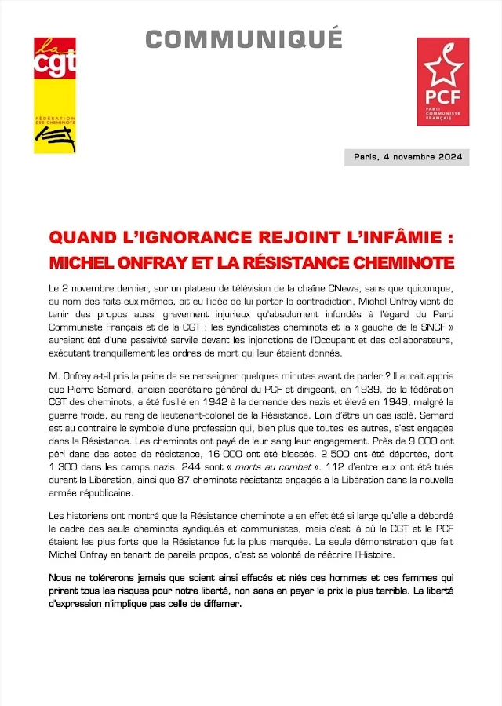

Communiqué cosigné relayé
Résistance cheminote. Le PCF et la CGT répondent à Michel Onfray
Date indiquée par Facebook · 5 novembre 2024
Repères éditoriaux
Dans leur communiqué du 4 novembre 2024, le PCF et la CGT contestent les propos tenus par Michel Onfray sur CNews. Le document joint rappelle l’engagement des cheminots dans la Résistance.
Texte conservé avec la publication
Onfray salit l’histoire de la résistance cheminote
Interrogée par Laurence Ferrari sur Cnews ce 2 novembre sur l'interdiction de publicité du livre de Jordan Bardella dans les gares SNCF, imputée à la CGT par la chaîne, Onfray a rétorqué : « On n'a pas vu les syndicats de gauche pendant la guerre s'opposer à la déportation. Je n’ai pas vu que la gauche de la SNCF ait refusé de conduire des trains qui conduisaient des déportés dans les camps de la mort. »
On savait Onfray compromis à l'extrême droite depuis quelque temps. Cela ne l'autorise pas à réécrire l'Histoire.

Sources
Archive rouge · export Facebook · AR-0002-FB-01254
À lire aussi · À Châteaubriant, l’hommage du 22 octobre aux fusillés · Le lien d’origine